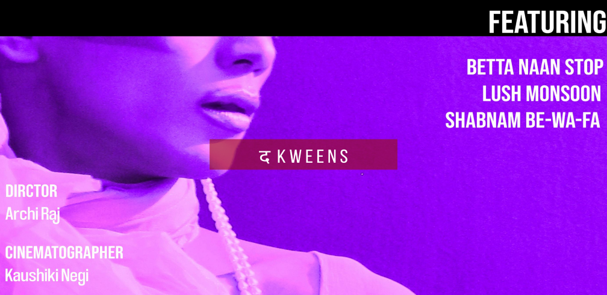
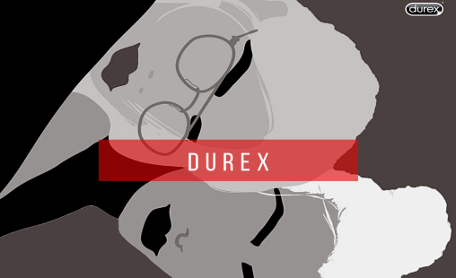
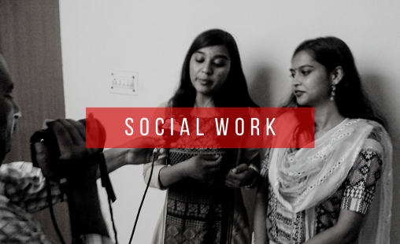
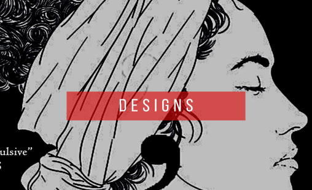
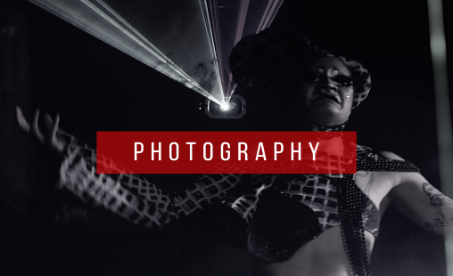

Time is linear so why things are stagnant when it comes to female condoms. So what are we waiting for?
Let us kick the taboo and share the power of owning the pleasure with our fellow “Jugnis”
“When world drives to insanity, we drive you to sanity”
A world that drives your reflexes through social media inferences, it’s time for us to cut out of this rift filled with toxicity.
मेरी प्यारी दिल्ली,
तुम्हारी अन-गीनत गलीयों को,
हमने अपने हिस्सो मे बाटा हैं।
तुम्हारे किस्सों मे
अपने बचपन को झाका है। मेरी प्यारी दिल्ली,
तुम दिल्ली हो,
तुम्हारा किस्सा बहुत पुराना है।.
And various other perspectives stored in form of stories to share

Social Work MP Outreach Program (News cut out)
- Awareness on higher education of girl child.
- Worked under Mr. Harish chandra Meena.
Breakthrough
An International Organization based in India & USA.
Interviewed body of ministers, police officers and many other elements of societal infrastructure to garner better understanding of root causes and help in empowering women by keeping up with their conscience
Fashion is the only thing that differentiates us from an animal rest everything is just survival instincts.
Interviewed Ravish Kumar to rewrite obituary for “Sad demise of reporting in Indian News Media.”
Covered reportage on recycling of flowers and how all religious places across our nation can adopt this eco friendly practice.

“Design is not just what it looks and feels like. Design is how it works.”
– Steve Jobs

“I like photographing the people I love, the people I admire, the famous and especially the infamous.”
– Helmut Newton
{kind=link}
{kind=link}
{kind=link}
{kind=link}
{kind=link}
{kind=link}
{kind=link}
{kind=link}